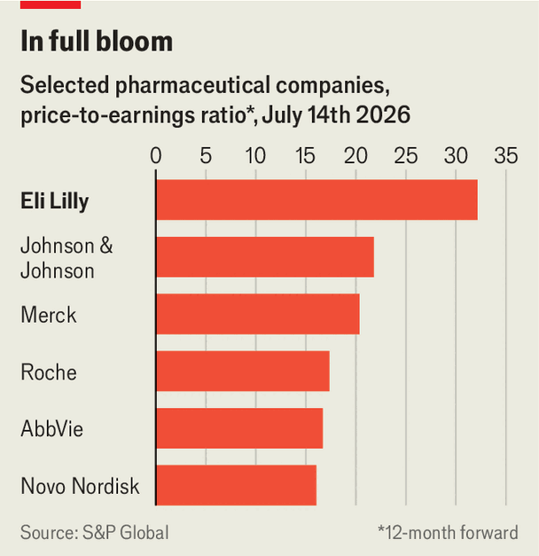

Eli Lilly is reinventing the pharma business
The world’s largest drugmaker is betting big on preventive medicines—and learning from big tech
July 16th 2026
In 1876 Eli Lilly, a veteran of the civil war, founded a company in Indianapolis to bring scientific rigour to a medicines market awash with quack cures and miracle remedies. In doing so, he helped usher in the modern pharmaceutical industry. A century and a half later, the company that bears his name wants to reinvent it again.
It has the scale to try. Lilly is the world’s most valuable drugmaker and the first pharmaceutical company to be worth more than $1trn, joining a club mostly dominated by tech giants. Since the start of 2023 its share price has more than tripled. Analysts expect its revenue to grow by around 15% a year, on average, until the end of the decade, more than three times the median of its peers. Investors now value Lilly more like a tech giant than a drugmaker (see chart).

Much of that euphoria rests on GLP-1s, a new class of obesity drugs that have transformed both the company and the industry. Zepbound, Lilly’s slimming jab, generated $4.9bn in sales in its first full year on the market in 2024. This year analysts expect sales to be quadruple that figure. The company now accounts for three-fifths of GLP-1 sales in America. Bloomberg Intelligence, a research group, estimates that Lilly could capture two-thirds of a global obesity-drug market worth more than $120bn a year by 2030.
For many bosses, conquering one of the biggest markets in pharmaceutical history would be enough. Not for Dave Ricks, Lilly’s chief executive. In an interview with The Economist, Mr Ricks laid out a grander plan. He wants to turn his company into a different kind of drugmaker: one focused on keeping people healthy rather than simply treating disease, while borrowing ideas about business from Silicon Valley.
Lilly’s rapid rise in obesity drugs helps explain its confidence. Novo Nordisk, a Danish rival, launched its treatment in America more than two years before Lilly. Yet by 2025 Zepbound had overtaken Novo’s drug. Mr Ricks credits both superior science and execution. Zepbound produced greater weight loss with fewer side-effects. Lilly also invested early in manufacturing, priced lower and quickly recognised that obesity would become a consumer market as much as a medical one.
Its lead in obesity medicines is now being tested. More than 120 companies are developing drugs, with at least 190 candidates in clinical trials. Lilly’s answer is to “cover the chessboard” with treatments offering different combinations of efficacy, tolerability and convenience. Manufacturing is another advantage. Obesity is a “capacity game”, Mr Ricks says. Since 2020 Lilly has committed more than $50bn to expanding production, betting that the ability to make these medicines at scale will matter as much as discovering them.
For Lilly, however, there is a bigger prize than slimming waistlines. GLP-1s are proving useful beyond their original purpose, reducing the risk of cardiovascular disease, sleep apnoea and chronic kidney disease. Early evidence suggests they may also help with addiction and psychiatric illness. Now the big question for Lilly is: can its medicines prevent maladies from developing in the first place?
The pursuit of prevention is shaping Lilly’s pipeline. In June it paid $7.8bn to acquire Centessa Pharmaceuticals, a biotech company developing a treatment for narcolepsy, which affects the brain’s ability to regulate sleep cycles. Daniel Skovronsky, Lilly’s chief scientist, says that part of the appeal of drugs that regulate sleep is that their benefits may be just as broad as those of GLP-1s. Lilly is also testing its Alzheimer’s drug, donanemab, in patients without symptoms to see if early treatment can delay, or even prevent, the disease.
The model comes with plenty of challenges, Mr Ricks admits. Today’s health-care systems, he says, are designed to treat illness, not prevent it. Then there is the thorny question of who pays. The costs of preventive medicines are immediate, but the savings may not emerge for years, making them difficult for insurers to value and reimburse. Prevention also risks over-diagnosis and over-treatment, raising difficult questions about who should receive medicines, and when.
A business built on prevention has to stay much closer to patients than pharma traditionally has. It must persuade people to start treatment earlier, make medicines easy to obtain and keep them on therapy for years. That is why Mr Ricks increasingly talks about Lilly less as a drugmaker and more as a technology company, emphasising a frictionless customer experience and the creation of platforms.
Health-care transactions are among the “most miserable, difficult things” people experience, Mr Ricks says. Patients struggle to understand prices and navigate a fragmented system, particularly in America, leaving them with little control over their care. Mr Ricks argues that buying a medicine should be as simple as knowing the price and getting it easily. LillyDirect, the company’s online pharmacy, is one attempt to make that happen by building a more direct relationship with consumers. Today more than half of new patients starting on its GLP-1s come through online channels including LillyDirect.
Then there is drugmaking itself. Discovering and launching a drug typically takes more than a decade, costs upwards of $2.5bn and largely starts from scratch each time. Lilly seeks to change that. Mr Ricks describes GLP-1s not as a product but as a platform—a common foundation on which multiple medicines can be built by adding other hormones. The manufacturing crossovers are just as important. Other drugs, particularly injectables, can “ride on the same rails” as GLP-1s, sharing much of the same manufacturing network, helping to lower costs.
Mr Ricks is not entirely besotted with Silicon Valley. He warns against “enshittification”, the tendency of platforms to serve themselves rather than their users. In health care, he says, that is a risk the industry cannot afford.
Nor is he as optimistic as some about artificial intelligence. Sir Demis Hassabis, head of Google DeepMind, has spoken of the technology’s potential to “cure all disease” within a decade. Anthropic, an AI lab, has launched an initiative to discover drugs using its models. Lilly, for its part, has teamed up with Nvidia, a chipmaker, to build what they describe as the industry’s most powerful AI supercomputer, which will be used to train biomedical models. It has also begun sharing AI models trained on its proprietary data with selected biotech companies in exchange for them feeding data back in. But Mr Ricks cautions that today’s models do not understand biology. Until AI can reason about the underlying rules of the body, its role in drug discovery will remain limited. “It’s going to be a long and difficult ride.” The nearer-term gains from AI, he argues, lie in making the wider health-care system, with its endless paperwork, less byzantine.
Mr Ricks has adopted one other convention from Silicon Valley. Unlike most pharma bosses, who shy away from the limelight, he has become a familiar presence on podcasts and at public forums, where he discusses the future of health care as much as Lilly itself. Partly, he says, that reflects his company’s position at the top of the industry. But he also thinks big pharma can do a better job of explaining itself. By having a public presence he hopes to make the industry, and its role in society, a little easier to understand. ■
To track the trends shaping commerce, industry and technology, sign up to “The Bottom Line”, our weekly subscriber-only newsletter on global business.